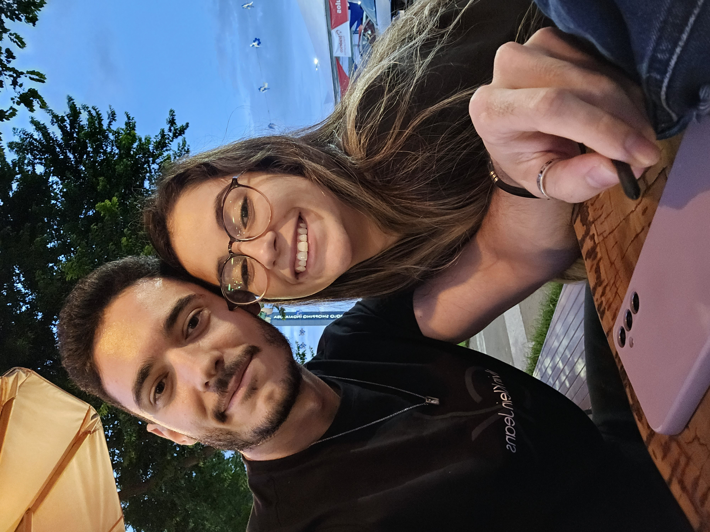
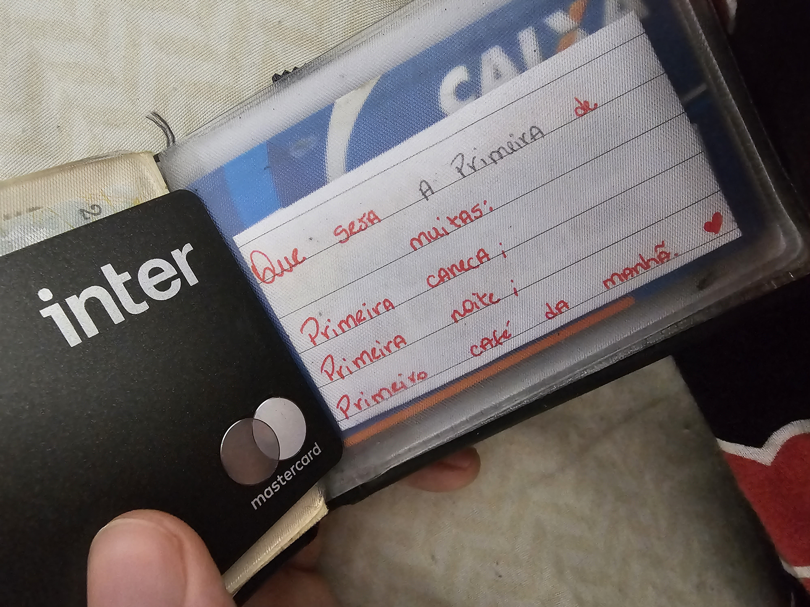
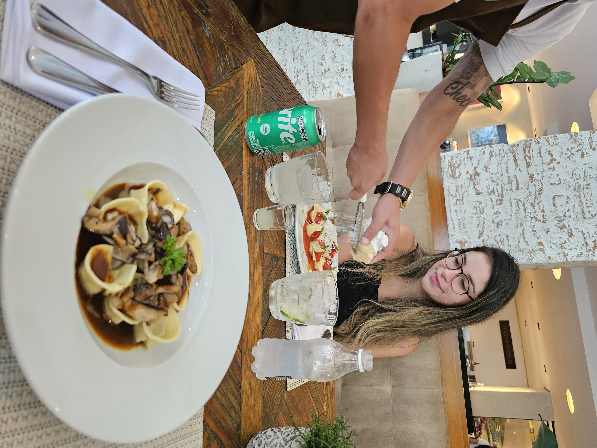
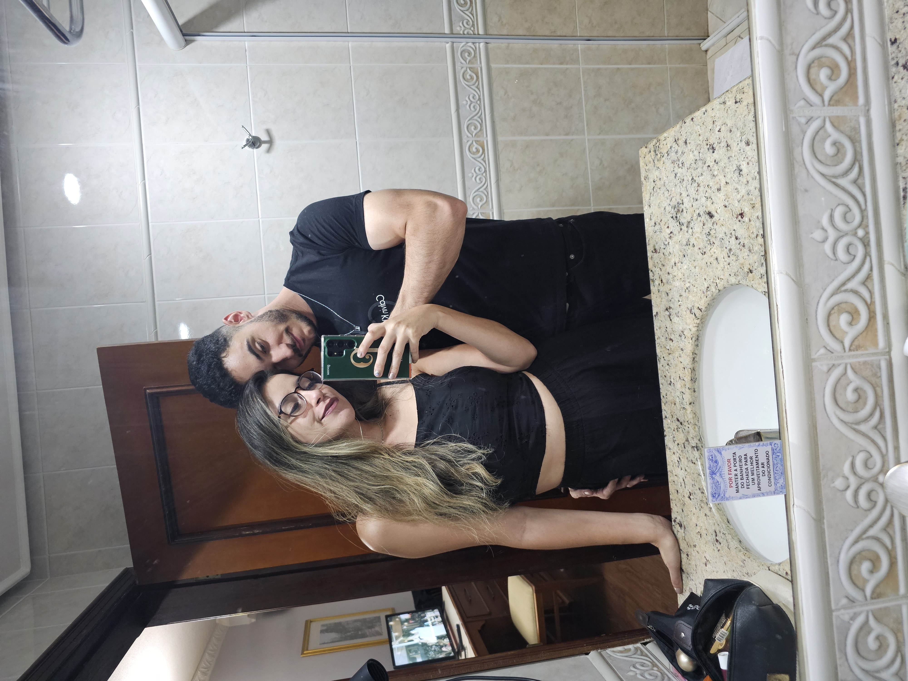
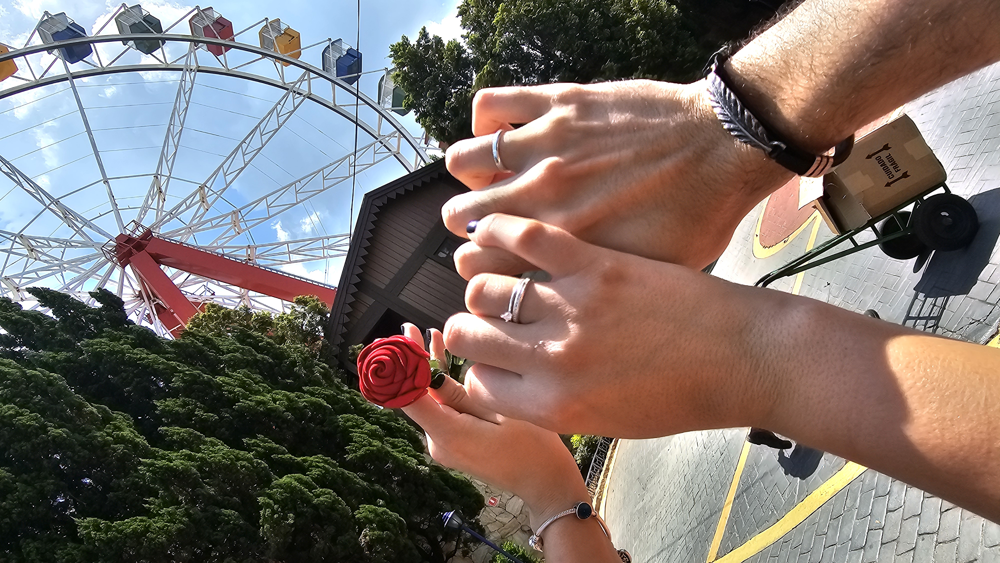
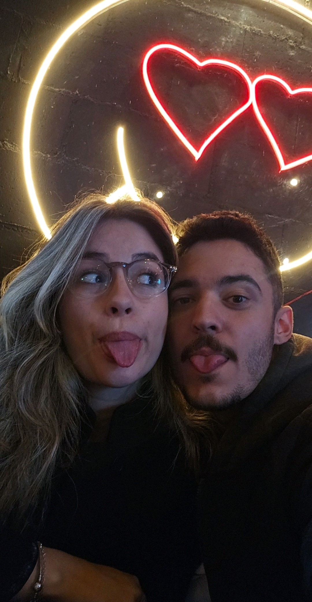

Nosso momento no parque 🌸

O dia em que minha mãe viu nós dois juntos ❤️

Os bilhetes dos quais amo tanto 🖋️❤️

Primeiro Almoço especial (hmmm Ravioli)🍝

O primeiro fim de semana fora de casa 💯💋🫣
Nosso lado VERDÃO💚🐷

O dia em que te entreguei um dos itens mais importantes da nossa história💍🌹❤️

Não importa o lugar, quando estamos juntos, é sempre lindo❤️🥁

A mulher que trouxe paz e mais felicidade em cada dia da minha vida🥹❤️
❮ ARRASTE ❯